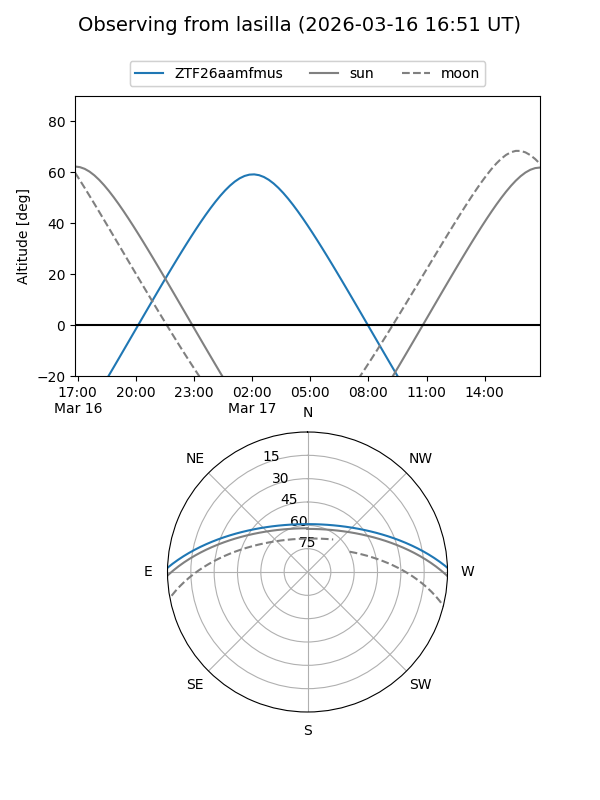
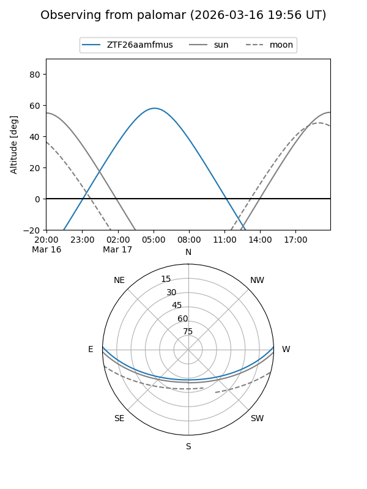

ZTF26aamfmus
Target ZTF26aamfmus at 2026-03-17 07:00
Aliases and brokers:
FINK: link
Lasair: link
ALeRCE: link
alt names
ZTF26aamfmus (ztf,fink_ztf)
Coordinates:
equatorial (ra, dec) = 134.2455,+1.62375
equatorial (HMS+DMS) = 08:56:58.92,+01:37:25.50
galactic (l, b) = (226.8941,+28.44021)
Flags:
Photometry:
last ztfg=19.91
1 ztfg detections
Lightcurve
Visibility


Additional plots